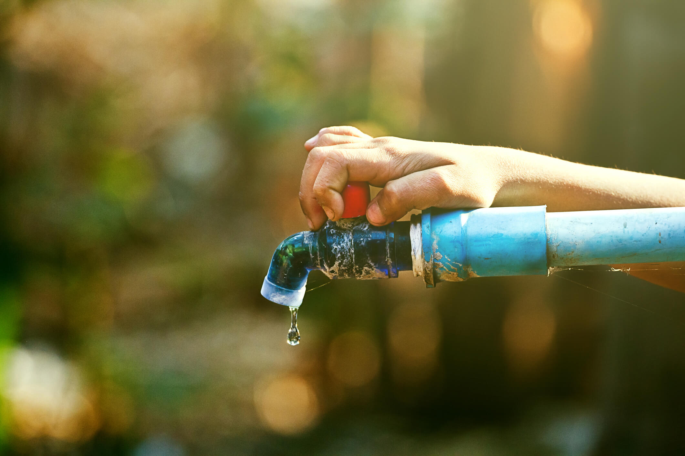
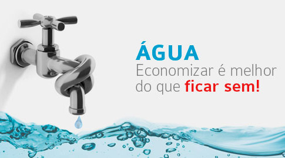

-
Por que economizar?
 Porque a falta de água atinge todos os setores da economia e é capaz de gerar impactos significativos no país.
-
Benefícios de economizar.
 A economia de água não apenas preserva o ambiente, mas também reflete em economia financeira, já que a conta tende a ficar menor, auxilia no orçamento familiar com a diminuição de valor na conta mensal, etc.
-
Por que economizar faz bem para o mundo?
 A economia de água não apenas preserva o ambiente, mas também reflete em economia financeira, já que a conta tende a ficar menor.
A economia de água não apenas preserva o ambiente, mas também reflete em economia financeira, já que a conta tende a ficar menor.